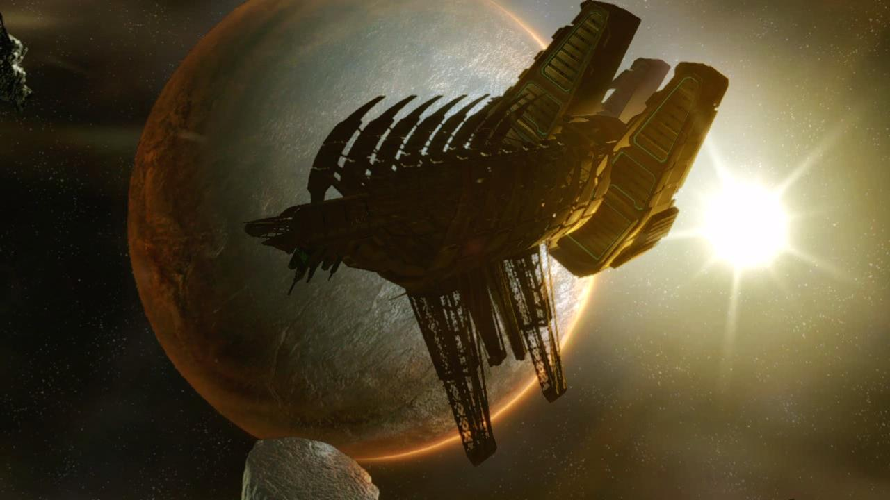

Welcome to the World of Dead Space!
What is Dead Space?
Third person survival horror game filled with stressful scenarios, horrific creatures and much more! Take control of Isaac Clarke, silent protagonist who is sent with a crew to a distress call from the USG Ishimura(mining vessel). When coming aboard the situation is more dire with nightmarish creatures has killed the crew and took over the ship. Fight to survive, find your girlfriend Nicole and escape.

Tips for Beginners!
- Aim for the limbs, the most important rule. Ammo is limited depending on difficulty so make your shots count!
- Carry two weapons at most since it will be hard to micromanage inventory in the heat of combat.
- Always keep at least one node on you. Nodes are objects that can be used to upgrade weapons and equipment while also opening supply rooms.
- Use the environment to your advantage. This includes limbs of creatures and explosive objects that can assist you in saving ammo.
